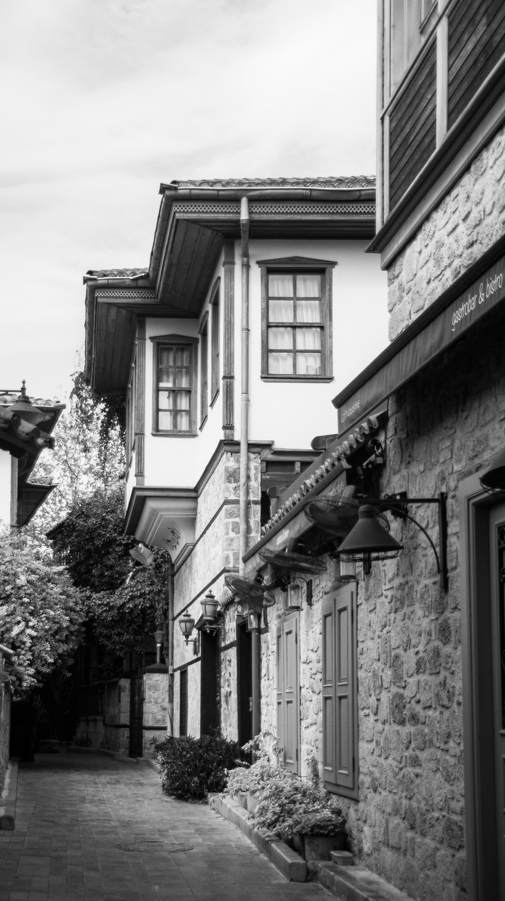
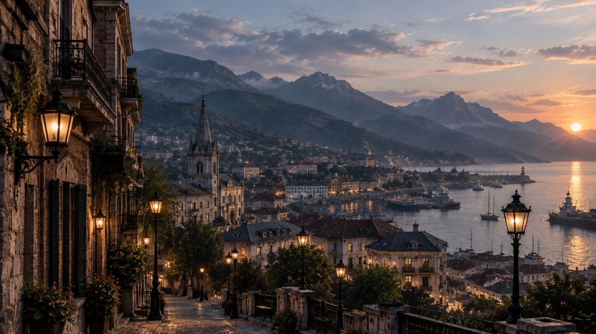
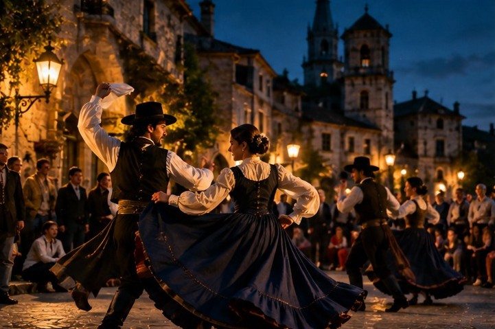
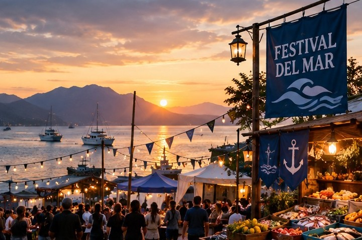

Inicio
Bienvenido a Ciudad Margarita. Una ciudad costera rodeada de montañas y envuelta en misterios, llena de historia, cultura y lugares turísticos que hacen de ella un destino único. Descubre todo lo que esta maravillosa y enigmática ciudad tiene para ofrecer.

La Ciudad


Ciudad Margarita es una ciudad costera rodeada de montañas, reconocida por su patrimonio histórico, sus barrios tradicionales y una cultura marcada por antiguas leyendas. Conoce su historia, cultura y tradiciones en los principales atractivos de la ciudad.
- El Pueblo de Arkham
- Museo de Dunwich
- Puerto de Innsmouth
Dónde Ir
Descubre los mejores atractivos turísticos de la ciudad.


- Danza de Erich Zann
- Noches de astronomía y letras
- Festival del Mar
- Festival gastronómico
Contacto
Encuentra toda la información de contacto para poder comunicarte y planificar tu visita.
Ver información de contacto